Guide utilisateur
Version 0.9 · pour la direction, le secrétariat et la caisse · sur ordinateur (PC)
Ce que vous trouverez ici
- Se connecter
- Activer le poste (une fois par appareil)
- L'accueil (tableau de bord)
- Paramétrer l'école : la « Mise en route »
- Importer la liste des élèves
- La liste des élèves et la fiche d'un élève
- Inscrire un nouvel élève
- Encaisser et imprimer un reçu
- Le journal de caisse et la clôture du jour
- Le personnel et les postes
- Bon à savoir : sans internet, verrouiller, en cas de problème
Les images de ce guide viennent d'une école de démonstration (noms et numéros inventés). Le ruban rouge « ESSAI » dans le coin
n'apparaît pas dans votre application.
1. Se connecter
On se connecte avec son numéro de téléphone : pas de mot de passe à retenir.
- Ouvrez ScolaGrid et cliquez sur Me connecter.
La toute première fois, le fondateur clique sur Créer l'espace de mon école.
- Tapez votre numéro, puis Recevoir le code.
- Un code à 6 chiffres arrive par SMS : tapez-le, puis Valider.
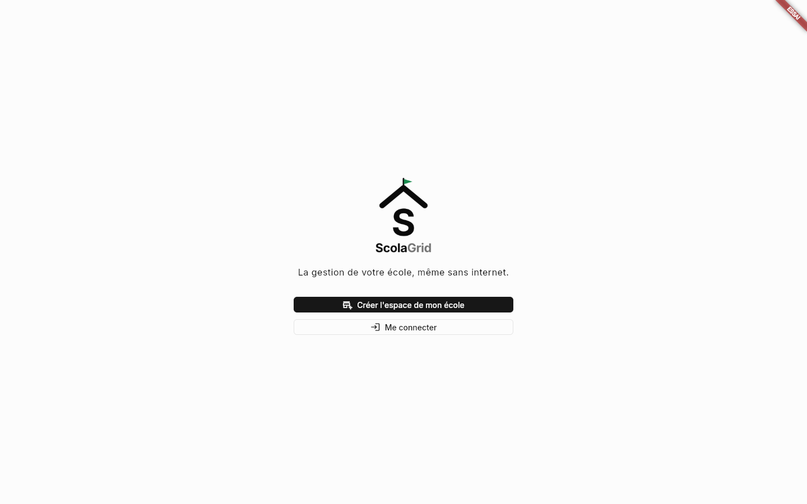
L'écran d'accueil de ScolaGrid.
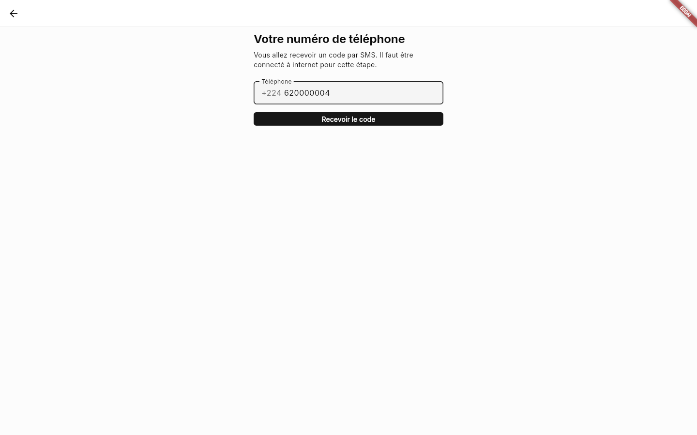
Votre numéro.
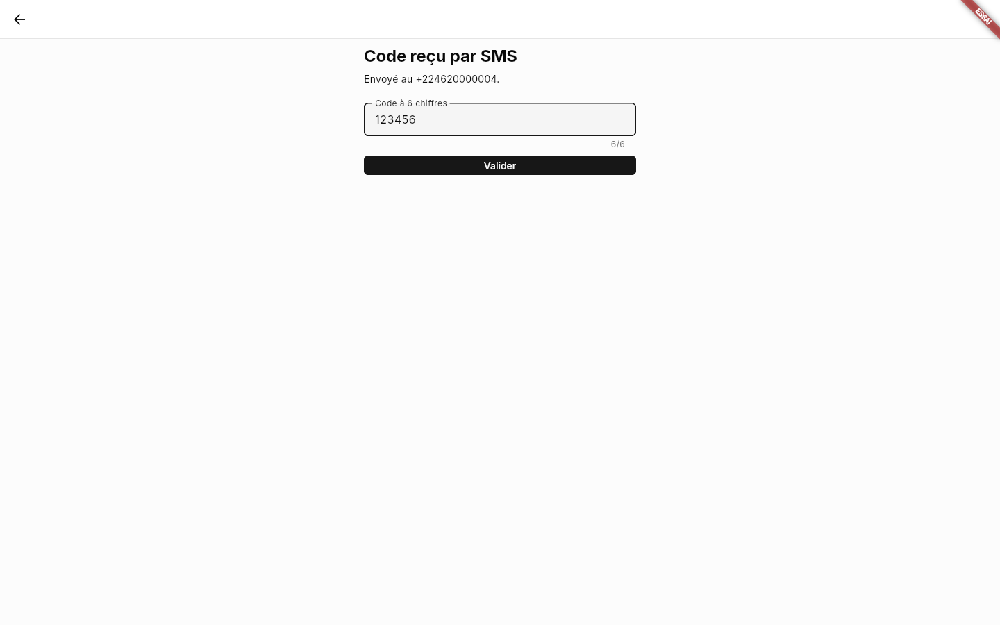
Le code reçu par SMS.
Un membre du personnel reçoit de la direction un code d'invitation (8 signes) : il le tape juste après sa
première connexion pour rejoindre l'école.
2. Activer le poste
Chaque ordinateur ou téléphone qui inscrit ou encaisse est un poste. Il reçoit une lettre (A, B, C…) qui figure dans les
matricules et les numéros de reçu. À faire une seule fois par appareil, avec internet.
- Sur l'accueil, dans « À faire », cliquez sur Activer ce poste.
- Donnez un nom au poste (par exemple « PC du secrétariat ») et choisissez le site.
- Choisissez votre code PIN (4 à 6 chiffres), deux fois, puis Activer ce poste.
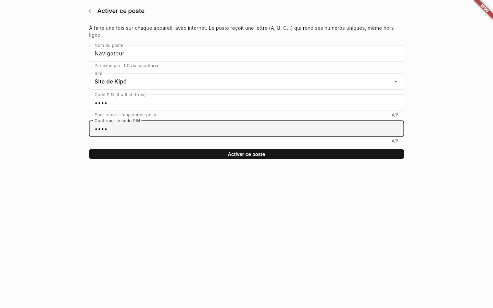
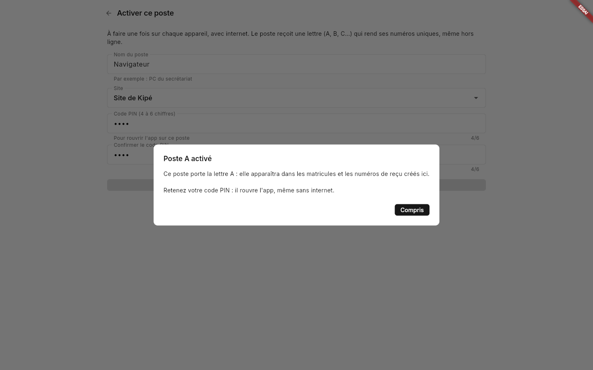
Le poste reçoit sa lettre. Retenez votre code PIN.
Le code PIN rouvre l'application sur ce poste, même sans internet. Il reste sur l'appareil : personne d'autre ne le connaît,
pas même la direction.
Un poste activé par quelqu'un d'autre que la direction est « À valider » : le fondateur ou le directeur le valide dans
Postes (voir partie 10).
3. L'accueil (tableau de bord)
À gauche, le menu : Accueil, Élèves, Caisse, Personnel, Postes, Paramètres (chacun ne voit que ce que sa fonction permet).
En haut, la recherche d'un élève et l'état de la connexion (« Connecté »).
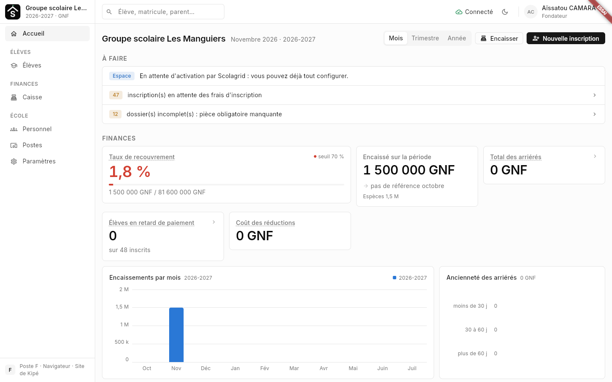
- À faire : ce qui attend une action (poste à activer, fiches incomplètes, refus du serveur…).
- Finances : ce qui a été encaissé, le taux de recouvrement, les arriérés et les élèves en retard. Cliquez sur une carte pour le détail.
- Les boutons Encaisser et Nouvelle inscription en haut à droite mènent directement au travail du jour.
En bas du menu, vous voyez la lettre et le nom de votre poste. Dans le menu de votre nom (en haut à droite), la version de l'application
(par exemple « ScolaGrid 0.9.2 »).
4. Paramétrer l'école : la « Mise en route »
Pour la direction. Menu Paramètres › Mise en route : les étapes dans l'ordre. Chaque étape cochée en vert est faite ;
cliquez sur une ligne pour l'ouvrir.
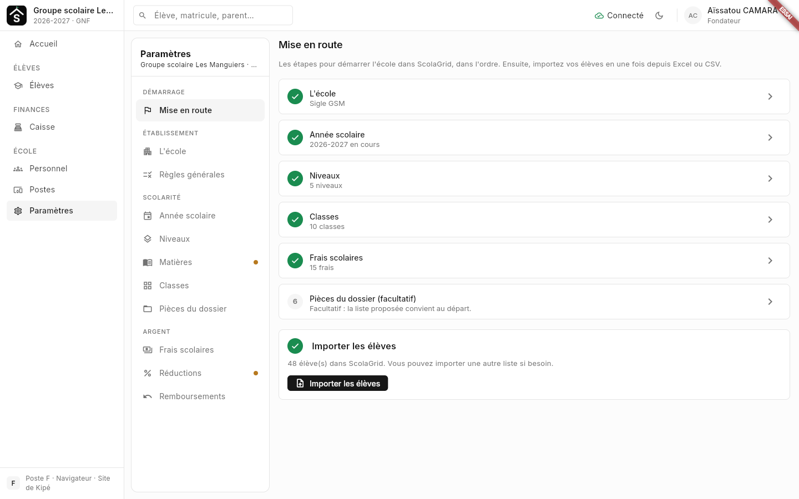
- L'école : nom officiel, sigle (il entre dans les matricules), contacts, logo.
- Année scolaire : dates, tranches de paiement.
- Niveaux : bouton « Utiliser le modèle guinéen », puis gardez vos niveaux. Au lycée, choisissez le type d'options
(Type 1 : SS, SL — Type 2 : SM, SS, SE).
- Classes : par niveau, le nombre de groupes (A, B…).
- Frais scolaires : inscription, réinscription, scolarité par niveau, en tranches.
- Pièces du dossier (facultatif).
Quand tout est vert, le bouton Importer les élèves s'active.
5. Importer la liste des élèves
Pour reprendre tous les élèves d'un coup depuis Excel. Menu Élèves › ⋯ › Importer (ou le bouton de la Mise en route).
- Cliquez sur Télécharger le modèle Excel. Il contient déjà vos classes, des listes déroulantes
(classe, sexe, type, lien) et deux onglets d'aide : « Guide des classes » et « Aide ».
- Remplissez une ligne par élève. Seuls NOM, PRÉNOMS et CLASSE sont obligatoires.
- Cliquez sur Choisir le fichier et choisissez votre fichier.
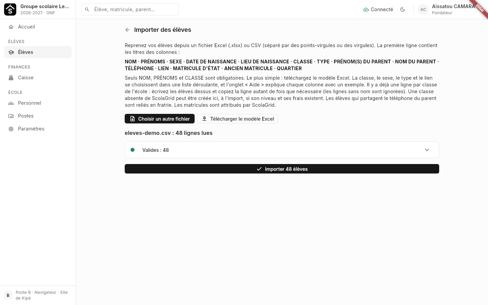
ScolaGrid vérifie le fichier avant d'écrire quoi que ce soit.
Le contrôle range les lignes en : Valides, Incomplètes (acceptées, à compléter plus tard), Doublons probables
(déjà dans ScolaGrid : non importés) et Rejetées (à corriger dans le fichier). Dépliez chaque groupe pour voir les noms.
- Cliquez sur Importer … élèves, puis Confirmer.
Ne cochez « Importer aussi les doublons probables » que s'il s'agit de vrais homonymes. Réimporter le même fichier
ne crée pas de doubles : seuls les élèves manquants sont proposés.
6. La liste des élèves et la fiche d'un élève
Menu Élèves : tous les élèves de l'année, avec matricule, classe, tuteur et statut. Filtrez par cycle, classe ou statut, ou
cherchez par nom, matricule (ScolaGrid, d'État ou ancien matricule) ou téléphone du parent.
Cliquez sur un élève : sa fiche s'ouvre à droite.
- Dossier : identité, matricules, dates, pièces fournies.
- Contacts : parents et tuteurs (qui paie, qui est le tuteur principal).
- Finances : ce qui est dû, payé et en retard ; encaisser d'ici.
- Suivi : l'historique (changements de classe, documents imprimés…).
En bas : Modifier, Changer de classe, Clore l'inscription. Le bouton ⋯ au bout de chaque ligne de la liste
propose aussi Encaisser, Attestation d'inscription, Réinscrire…
7. Inscrire un nouvel élève
- Cliquez sur Nouvelle inscription.
- ScolaGrid demande d'abord de chercher l'élève : s'il est déjà connu, on le réinscrit au lieu d'en créer un second.
- Sinon, choisissez Nouvelle inscription, Transfert entrant ou Déjà élève avant ScolaGrid.
- Remplissez dans l'ordre : Identité, Contacts (au moins un parent avec son téléphone ; prénom et nom séparés),
Classe, Pièces du dossier, Frais.
- Terminez par Créer et encaisser (paiement tout de suite) ou Créer, payer plus tard.
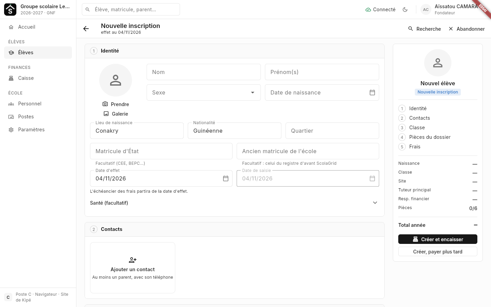
Le formulaire ; à droite, le résumé et le total de l'année.
Si le téléphone du parent est déjà connu, ScolaGrid le retrouve et relie les enfants (fratrie) : on les encaisse ensemble
sur un même reçu.
8. Encaisser et imprimer un reçu
- Menu Caisse, puis Encaisser (ou « Encaisser » depuis la fiche de l'élève).
- Dans « Ajouter un élève », tapez le nom ou le matricule et choisissez l'élève. Ses frais dus apparaissent.
- Tapez le montant versé, ou cliquez sur Solde pour tout payer. Vérifiez le payeur et le mode (espèces, Orange Money…).
- Cliquez sur Enregistrer et imprimer, puis Confirmer.
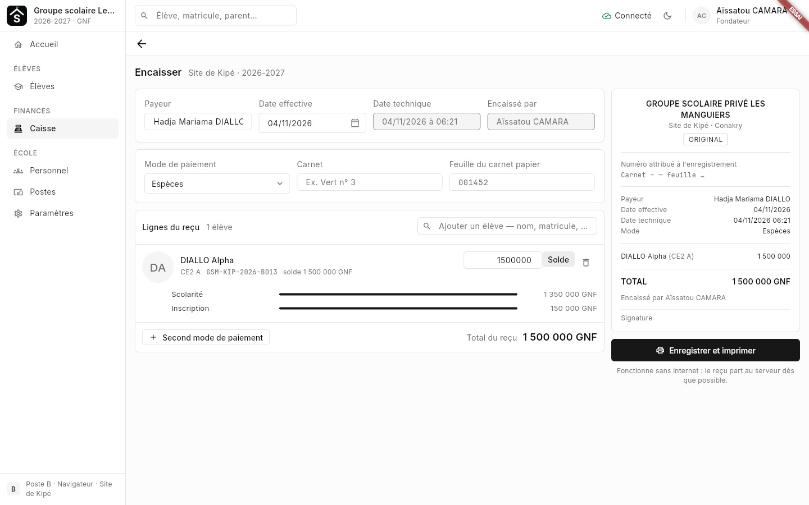
À droite, l'aperçu du reçu tel qu'il sera imprimé.
- Plusieurs enfants de la même famille : ajoutez-les sur le même reçu.
- Une partie en espèces, le reste par mobile money : Second mode de paiement.
- Le reçu fonctionne sans internet : il part au serveur dès que possible.
9. Le journal de caisse et la clôture du jour
Menu Caisse : le journal du jour (changez de jour avec les flèches), filtrable par encaisseur et par mode.
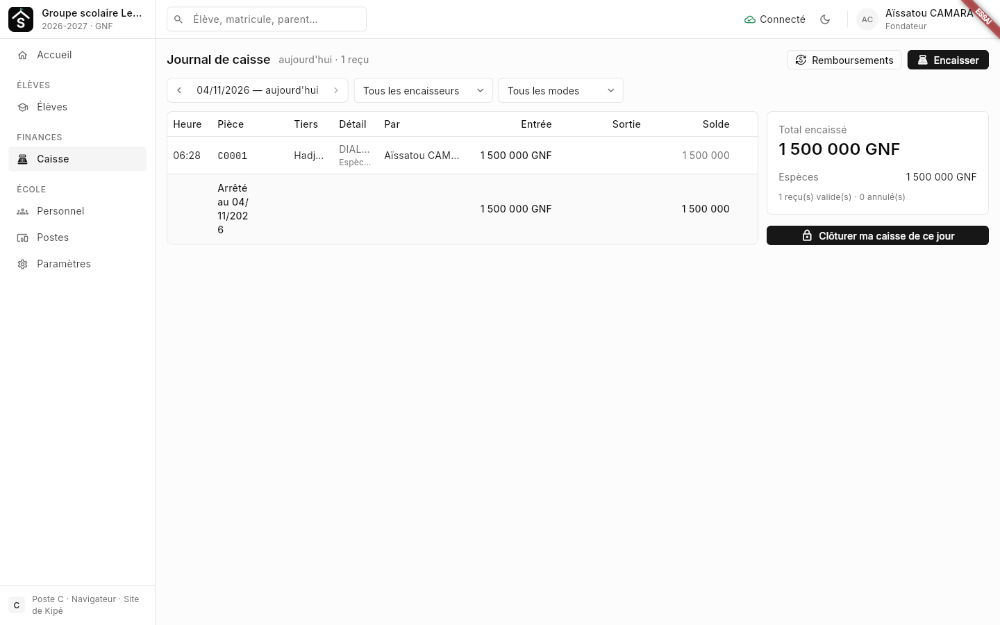
- Cliquez sur un reçu pour l'ouvrir : Réimprimer (duplicata), Demander un remboursement ou Annuler ce reçu
(avec un motif).
- En fin de journée : Clôturer ma caisse de ce jour. Tapez les espèces comptées dans le tiroir ; s'il y a un écart,
une justification est demandée.
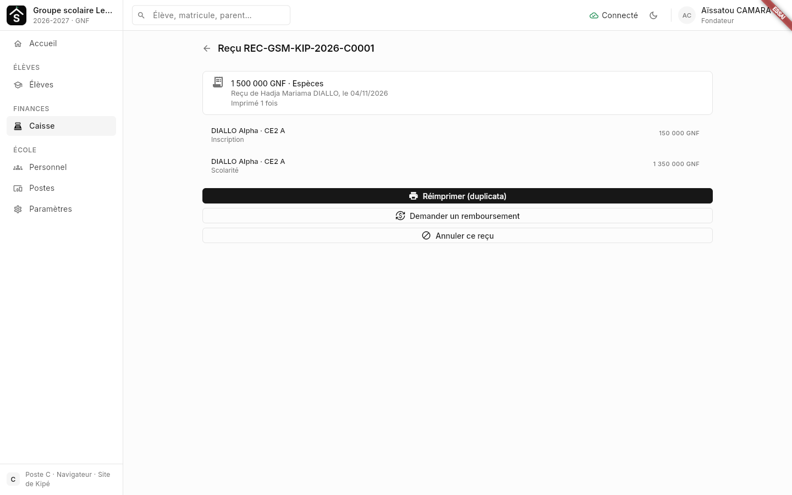
Après la clôture, la journée est verrouillée : annuler un de ses reçus demande la direction.
10. Le personnel et les postes
Pour la direction.
Personnel
- Ajouter une personne : prénom, nom, téléphone et une ou plusieurs fonctions (secrétaire, comptable,
enseignant…). Les droits découlent des fonctions.
- Pour lui donner accès à l'application : ouvrez sa fiche et envoyez-lui son code d'invitation.
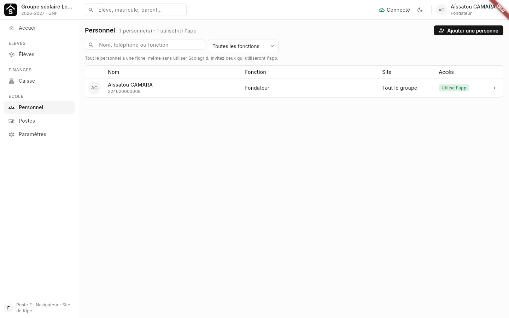
Postes
- La liste des appareils, avec leur lettre, qui les a activés et leur dernière synchronisation.
- Valider un poste « À valider ». Bloquer un poste perdu ou volé : à sa prochaine connexion, il efface ses données.
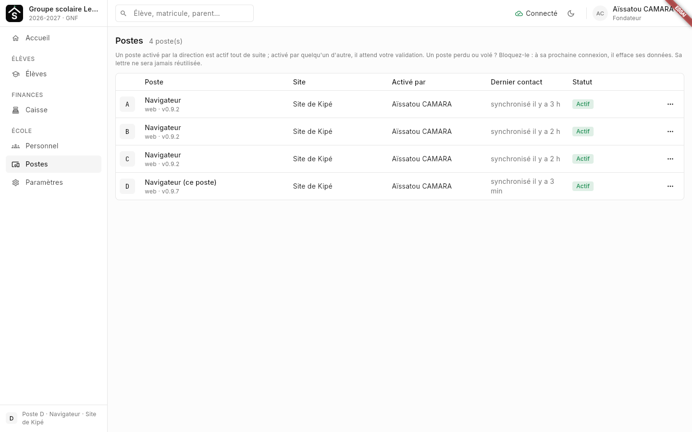
11. Bon à savoir
Sans internet
ScolaGrid fonctionne hors ligne : inscrire, encaisser, imprimer. Tout part au serveur dès que la connexion revient
(l'état de la connexion est affiché en haut, à côté de la recherche). Pensez à vous connecter au moins une fois par jour.
Verrouiller ou se déconnecter
- Verrouiller (menu de votre nom) : quand vous vous absentez. On rouvre avec le code PIN, même sans internet.
- Se déconnecter : seulement si quelqu'un d'autre va utiliser ce poste avec son propre compte. Il faudra internet pour se reconnecter.
- Code PIN oublié : sur l'écran du code, « Code PIN oublié », puis reconnexion avec le numéro et un nouveau PIN.
Mettre à jour l'application
Installez la nouvelle version par-dessus l'ancienne, depuis la page de téléchargement. Sur navigateur, rechargez la page avec
Ctrl + F5. Vérifiez le numéro de version dans le menu de votre nom.
En cas de problème
- « Refusés par le serveur » sur l'accueil : un changement n'a pas été accepté. Le nom de l'élève et la raison sont indiqués :
corrigez puis refaites-le.
- Une question, un blocage : faites une capture d'écran et envoyez-la au responsable ScolaGrid de l'école.